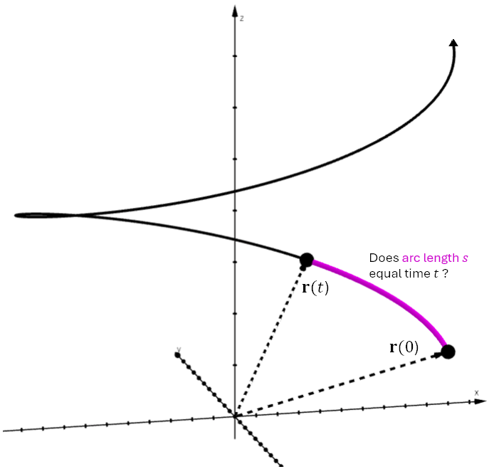

Lesson 11: Arc Length as the Parameter
The vector-valued function \(\mathbf{r}(t)\) can be interpreted as tracing out the path of a particle. We call \(t\) the parameter. The parameter usually represents time, but it can represent other quantities.

Arc length is the parameter when the arc length, the distance traveled by the particle, equals the amount of time the particle has been traveling. It results from a constant speed of one.
The Key Idea
If we travel at a constant speed of 1 mile per hour, then:
- We travel 1 mile in 1 hour.
- We travel 2 miles in 2 hours.
- We travel 8 miles in 8 hours.
If we move at a constant speed of 1 mile per hour, the distance we travel, which is the arc length, is equal to the amount of time we have been traveling. This is what it means for arc length to be the parameter.
An Example
Show that arc length is the parameter for the below vector-valued function.
We just need to check whether the speed is always equal to one.
The speed is one, so arc length is the parameter. When arc length is the parameter, we often use \(s\) for the parameter, as in this example.
An Example
Show that arc length is not the parameter for the below vector-valued function.
We check whether the speed is always equal to one.
Since \(4t^2 \ge 0\), the speed is always at least \(\sqrt{221}\), which is greater than one. The speed is never one, so arc length is not the parameter.